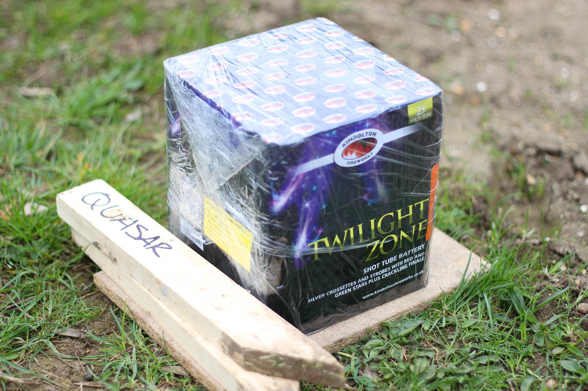
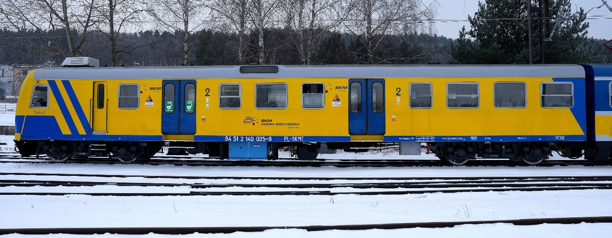

FAJERFUN
Bezpieczeństwo przede wszystkim
Odpalanie fajerwerków to niesamowite widowisko i świetna zabawa, ale nigdy nie wolno zapominać, że mamy do czynienia z materiałami wybuchowymi. Aby każda impreza skończyła się tylko pięknymi wspomnieniami, a nie wizytą w szpitalu, musisz bezwzględnie przestrzegać kilku podstawowych zasad bezpieczeństwa.

Pamiętaj, że legalnie fajerwerki, oprócz w Sylwestra/Nowy Rok, można odpalać tylko na terenie prywatnym.
1. Wybór odpowiedniego miejsca
Fajerwerki należy odpalać wyłącznie na otwartej przestrzeni. Upewnij się, że w pobliżu nie ma drzew, linii wysokiego napięcia, zaparkowanych samochodów ani budynków. Podłoże pod wyrzutnią (baterią) musi być płaskie, twarde i stabilne, aby konstrukcja nie przewróciła się w trakcie wystrzałów. Dobrym pomysłem jest obłożenie wyrzutni ciężkimi kostkami brukowymi lub kamieniami.
2. Nigdy nie pochylaj się nad pirotechniką
To jeden z najczęstszych błędów, który prowadzi do ciężkich urazów twarzy i rąk. Podczas podpalania lontu stój z boku. Wyciągnij rękę z zapalniczką (najlepiej z długą szyjką), odpal koniec lontu i natychmiast się odsuń. Pod żadnym pozorem nie trzymaj głowy bezpośrednio nad rurkami wyrzutni ani nad petardą!
⚠️ Ważne ostrzeżenie o niewypałach!
Jeśli po odpaleniu lontu fajerwerki nie zadziałały, nigdy nie podchodź do nich od razu. Odczekaj minimum 15-20 minut. Istnieje ryzyko, że lont tli się w środku bardzo powoli. Po tym czasie bezpiecznie podejdź i wrzuć cały artykuł do wiadra z wodą, aby go całkowicie rozbroić. Nigdy nie próbuj podpalać niewypału po raz drugi!

Jeden wagon kolejki SKM to około 17 do 26 metrów. Jeśli trudno wizualizować ci liczby, myśl o długości jednego wagonu kolejowego!
3. Zachowaj bezpieczną odległość
Każdy produkt pirotechniczny posiada na etykiecie instrukcję obsługi w języku polskim oraz informację o strefie bezpieczeństwa. Zazwyczaj dla widzów jest to odległość od 15 do nawet 25 metrów. Zadbaj o to, aby Twoi znajomi oraz dzieci stali w bezpiecznym miejscu, osłonięci od ewentualnych niespodziewanych iskier.
4. Alkohol to wróg pirotechniki
Złota zasada, która na naszej stronie pojawia się nie bez powodu: osoba, która zajmuje się przygotowaniem i odpalaniem fajerwerków, musi być w 100% trzeźwa. Alkohol opóźnia czas reakcji, odbiera zdrowy rozsądek i prowadzi do brawury, która w świecie pirotechniki kończy się tragicznie.
Przede wszystkim:
- Zawsze czytaj instrukcję na opakowaniu przed odpaleniem.
- Kupuj produkty tylko ze sprawdzonych źródeł, posiadające certyfikat CE.
- Chroń zwierzęta domowe - schowaj je w najcichszym pokoju w domu.
- Bądź odpowiedzialny, zdrowie i życie są najważniejsze!